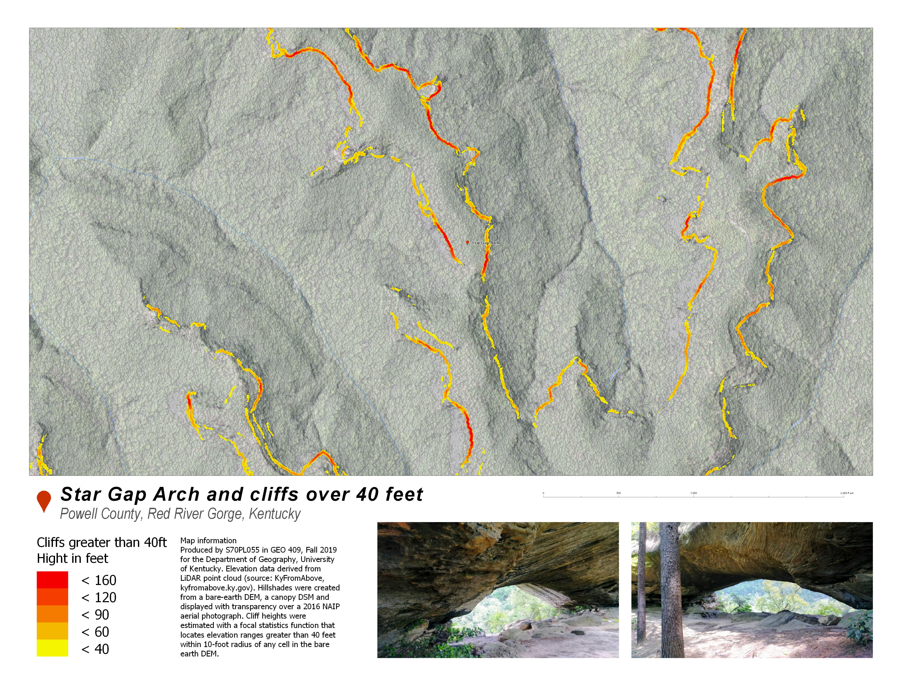
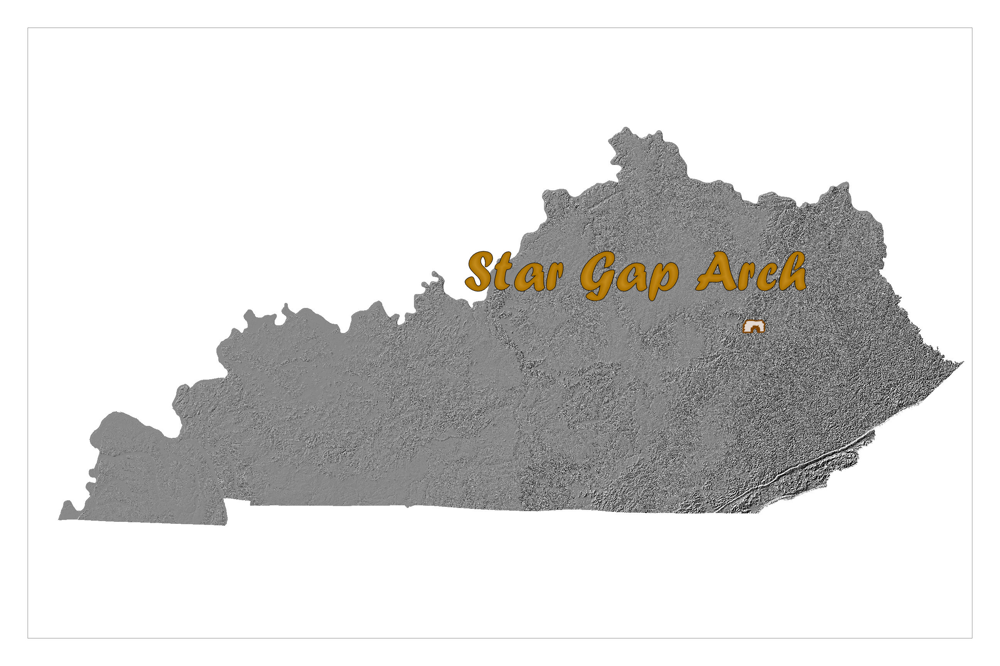
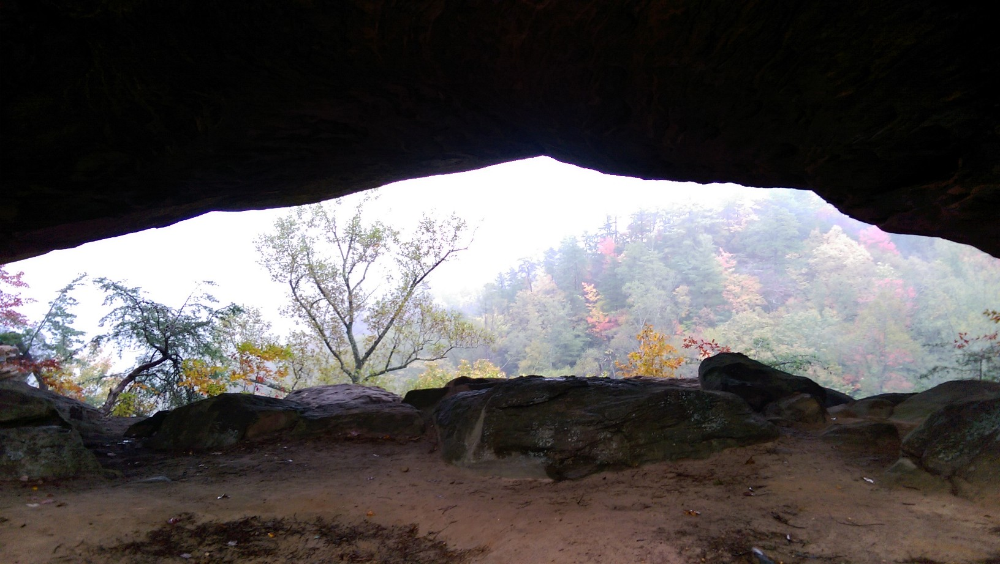
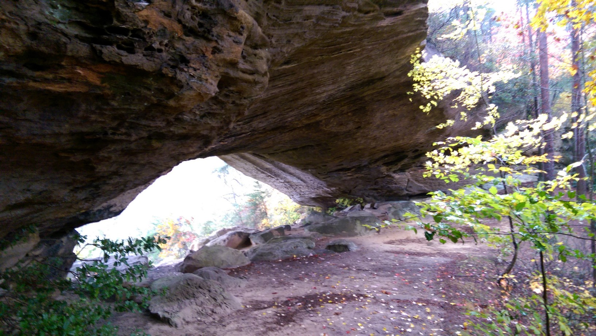
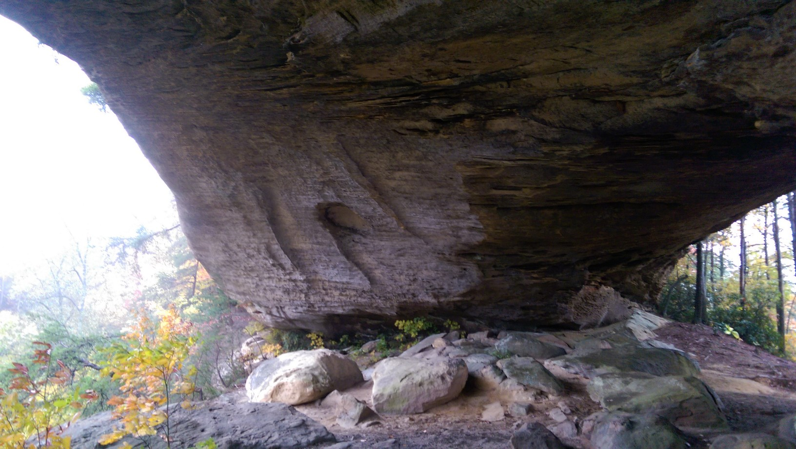
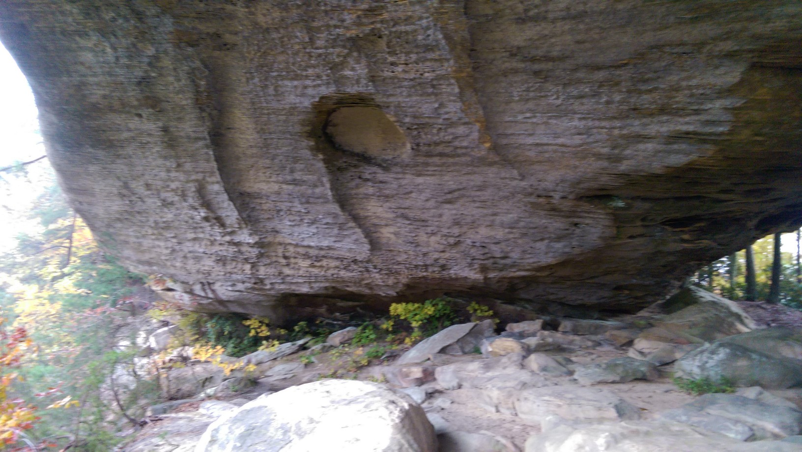
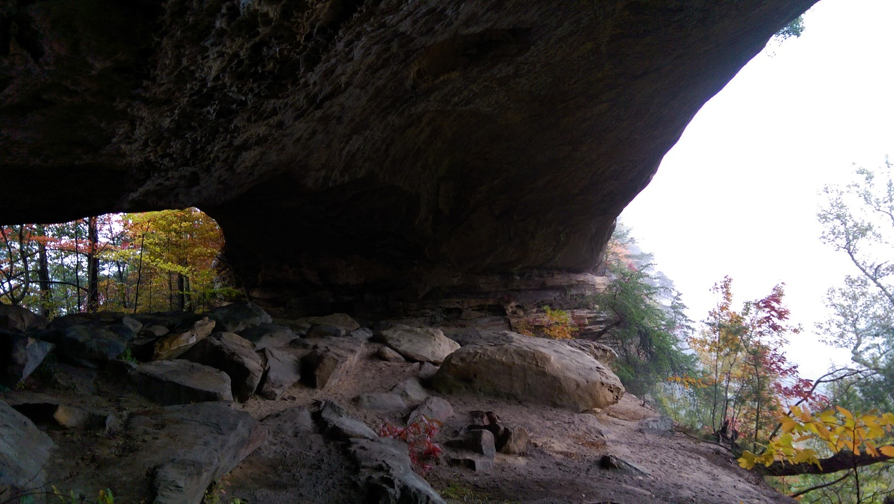

Star Gap Arch
University of Kentucky Geography
Star Gap Arch is a sandstone arch in the Red River Gorge geological area in Kentucky. The arch is over 80-feet high, almost 180-feet long, and is approximately 50-feet wide.
The arch is accessible from the Auxier Ridge Trailhead parking lot. Once there, its a short hike down the Forest service road. About 0.6 mile turn left onto the trail head and follow it for 1 mile. Now here is the tricky part, turn right and follow a worn UNMARKED path north. Take care as there are steep cliffs on both sides of the path. You will reach a narrow point with bare rock and no trees. Congragulations! You are now standing on Star Gap Arch. To see the arch you can bolder down the right side of the arch (if you are daring enough) or just back track 100 yards and climb down the left of the arch. Hike back north and you will see one of the largest arches in the Red River Gorge.
If you zoom the map above, you'll discover 718 named arches in the U.S. Board on Geographic Names. A cluster of arches exists in eastern Kentucky, but most arches exist in the west. The average elevation for an arch is 3,947 feet above sea level. The five most common names for an arch are 'Natural Arch', 'Natural Bridge', 'Window Rock', 'Arch Rock', and 'The Arch.')
Print map for this location
 Cliffs over 40-feet high around Star Gap Arch{kind=link}
Data sources and methods
The primary sources of data for map and video creation include:
- Lidar point cloud data from the KyFromAbove
- 2016 NAIP aerial color photography from USGS EarthExplorer
- GNIS Database of places names from the U.S. Board on Geographic Names
The lidar data was processed in ArcGIS Pro to produce a bare-earth DEM. Focal statistic function was used on this DEM to estimate cliff heights and to help produce elevation contours. For the 3D animation, a lidar point cloud was colorized by the aerial image, filtered to include above-ground points, and added to a scene for animation. Python was used to help with data processing and analysis.
This project is part of the Department of Geography, University of Kentucky course GEO 409, Fall 2018.
Location in Kentucky
3D digitally rendered flyover of Star Gap Arch in ArcPRO using LiDAR data.
3D Star Gap ArchSouthwest view of arch just off the path.
Looking through the arch from western side (Large cliff on the eastern side).
Northwest view of the Arch.
View of the southern leg of the arch (Great view of the chemical weathering patterns!).
Closeup of weathering patterns of southern leg.
View of northern leg of Star Gap Arch.